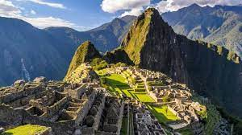
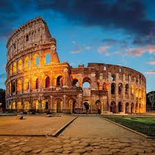
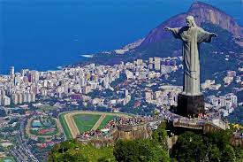
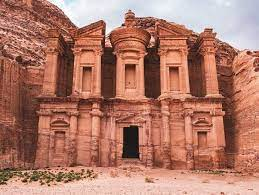
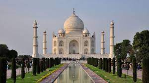

<DOCTYPE html>

  <head>
    <meta charset="utf-8">
    <title> Machu Picchu</title>
  </head>



<style>


/*Colocamos una imagen de fondo al 'body' de nuestras páginas*/

body {  
  
  background-color: #560; 
}


/*Creamos la clase 'center' de forma que podamos centrar, por ejemplo, las tablas de nuestras páginas*/

.center{

	margin-left: auto;
	margin-right: auto;
}


/*Le damos formato a los encabezados H1*/
h1 {
  font-weight: bold;
  text-align: center;   
  font-family: Monaco, "Bitstream Vera Sans Mono", "Lucida Console", Terminal, monospace;
  color: #fff;
  
}

h2 {

  font-weight: bold;
  text-align: left;  
  font-family: Monaco, "Bitstream Vera Sans Mono", "Lucida Console", Terminal, monospace;
  color: white 	;

}

p, ul {

  font-family: Verdana, Helvetica, sans-serif;
  color: #fff;
  font-size: 12px; 

}


/*Le damos formato a los pies de imagen*/
figcaption {

  text-align: center;
}


/*Le damos formato a las imágenes*/
img {
  
  display: block;
  width: 50px;
  height: 50px;
  width: 100%;

}

</style>


<table border = '8' class= 'center' >  

<tr>
	<td><a href = 'Chichen_Itzá.html'> <figcaption> Chichen_Itzá </figcaptaion></a></td>
                
	
        <td><a href = 'Coliseo_Romano.html'> <figcaptaion> Coliseo_Romano</figcaptation></a></td>
	
 	<td><a href = 'Cristo_Redentor.html'>  <figacaptation> Cristo_Redentor</figcaptation></a></td>
	
</tr>

<tr> 
	 <td><a href = '../index.html'> <figcaptation> casa</figcaptation></a></td>

	 <td><a href = 'Muralla_China.html'> <figcaptation> Muralla.China</figcaptation></a></td>
	
       	 <td><a href = 'Petra.html'> <figcaptation> Petra</figcaptation></a></td>
               
</tr>

<tr>
         <td><a href = 'Taj_Mahal.html'> <figcaptation> Taj_Mahal</figcaptation></a></td>  

</tr> 
</html>

<h1> Machu Picchu(Perú) </h1>

<body> 

<h2>Machu Picchu (pronunciado /ˈmɐt͡ʃʊ ˈpɪkt͡ʃʊ/ en quechua, «Monte viejo») es el nombre contemporáneo que se da a una llacta —antiguo poblado incaico andino— construida antes del siglo xv, ubicada en la Cordillera Oriental del sur del Perú, en la cadena montañosa de Los Andes a 2430 metros sobre el nivel del mar. Está ubicada en la región Cusco, provincia de Urubamba, distrito de Machupicchu, sobre el Valle Sagrado de los Incas, a 80 kilómetros al noroeste de la ciudad de Cusco, ciudad del Perú y por donde fluye el río Urubamba, río que atraviesa la cordillera y origina un cañón con clima de montaña tropical. Según muchos estudiosos su nombre original habría sido Llaqtapata.

Según documentos de mediados del siglo xvi, tenía un carácter privado.1​ Sin embargo, algunas de sus mejores construcciones y el evidente carácter ceremonial de la principal vía de acceso a la llaqta dan cuenta de su origen anterior a Pachacútec y a su presumible utilización como santuario religioso.2​ Ambos usos, el de palacio y el de santuario, no habrían sido incompatibles. Aun cuando se discute su supuesto carácter militar, por lo que los populares calificativos de «fortaleza» o «ciudadela» podrían haber sido superados</h2>
</body>